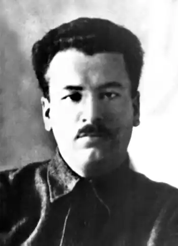

Справжнє ім'я – Кирило Юхимович Коршак. Народився 12.05.1897 р. у с. Дирдин поблизу м. Городища на Черкащині. Закінчив Черкаську учительську семінарію і працював учителем сільської школи. Потім вступив до Київського ІНО.
Почав друкуватися у 1924 р. в журналах "Нова Громада", "Життя й Революція", "Глобус", "Червоний Шлях", стає членом "Плуга". О. Лан видав три збірки поезій: "Отави косять" (1928), "Назустріч сонцю" та "Долоні площ" (обидві – 1930).
Коли наприкінці 1920-х р. почалися арешти української інтелігенції, О. Лан перестав публікуватися, а натомість захопився археологією і в 1932–1934 рр. працював науковим співробітником Інституту теорії матеріальної культури АН УРСР. Однак у 1937-му його звільнили з інституту, а 6.11.1937 р. арештували і 22.12.1937 р. розстріляли.